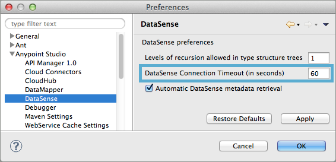
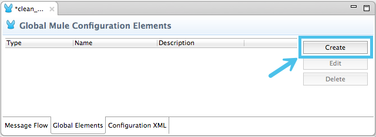
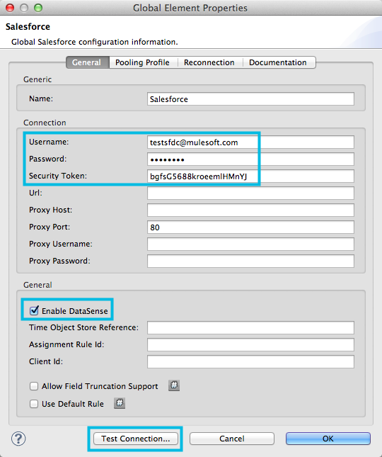
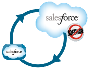
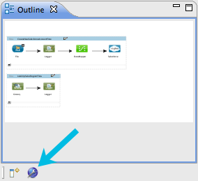
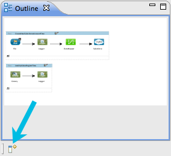
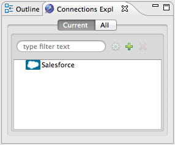
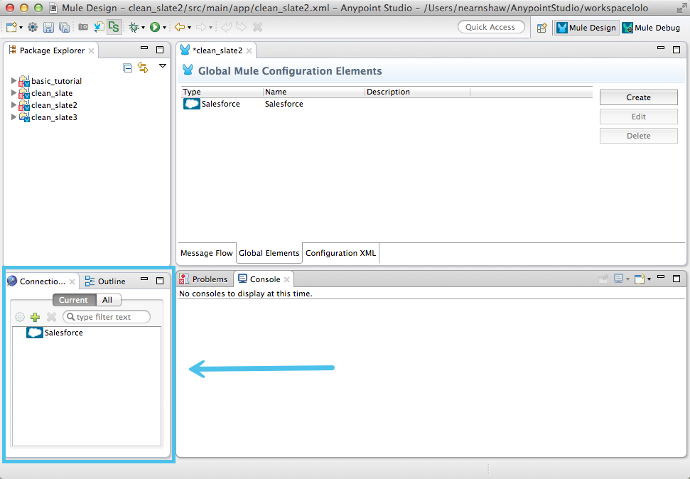

Testing Connections
This functionality enables you to test connections to external resources. As you model your application in Studio, you have the opportunity, when configuring connectors, to test the functionality of its connection to a Web service.
Prerequisites
This document assumes that you are familiar with the Visual Editor in Anypoint Studio, as well as the Anypoint Connectors and DataWeave Transformer that you can use to create applications in Studio. Further, this document references Connectors and Global Elements. Review DataSense to learn more about the overall DataSense functionality.
Testing a Connection to an External Resource
As you model flows in a Mule application, you are likely to use a connector to communicate with an external resource, such as a SaaS provider. As you configure a connector with all the details that enable it to connect with a resource – username, password, URL – you might ask yourself: have I configured everything I need to be able to connect successfully?
Rather than wait until you run the application to find out if a connection is functional, Anypoint Studio allows you to test the connection as soon as you have built it to confirm communication. Thus, you can cross one potential runtime bug off the list by testing the connection early, as you model your flow.
Limitations
-
Be aware of call limits. Some SaaS providers place a limit on the number of calls you can make to a service. Each time you test a connection, you are using up one call to the service. Avoid excessive connection testing so as not to approach your service call limits.
-
Connection testing functionality is only available in Studio’s Visual Editor.
Set a Connection Time-out
By editing the Anypoint Studio Preferences, you can set a connection timeout value for DataSense so that, in case the connection fails to respond for long enough, Mule stops trying.
-
Navigate to Preferences > Anypoint Studio > DataSense
-
Set the parameter DataSense Connection Timeout to the value in seconds that you prefer.

Testing New Connections
When creating a new connector, you can configure all connection values, then – before you even hit save – you can conduct a one-click test to make sure that your connector is successfully communicating with the resource.
-
In the Global Elements tab, click Create New.

Select one of the Anypoint Connectors which support connection testing.
-
Configure your connector with all the required connection values, most importantly username and password. Because you’re testing a connection, so you must enter all the required details to access the resource.
-
Confirm that the Enable DataSense box is checked (by default, it is checked).
-
Click Test Connection
 -
Studio calls the resource and attempts to connect.
If successful, Studio displays a message to indicate success. If unsuccessful, Studio displays an error which describes the connection issue.
-
At this point, during creation of the connector, you have the ability to adjust the connector’s configuration and test as often as needed until you can confirm a successful connection. When satisfied with the connection, click OK to save.
| If you are disinclined or unable to resolve any connection issue immediately, you can uncheck the Enable DataSense box, then click OK to simply save the connector configurations. With DataSense disabled, Mule does not test the connection or retrieve metadata when you click OK. |
Testing Existing Connections
If you have already created connectors, those which support connection testing (see table above) appear in a the the Connections tab of the Outline pane in Studio (see image below).
Where is my Connections tab?
If you cannot see the Connections tab in Studio, it may be hidden or closed.
-
Check the bottom lefthand corner of your Studio window for a small, blue globe icon with a wrench (see image below). Click this icon to display the Connections tab.
 -
If no globe icon is present, click the Show View icon at the bottom lefthand corner of your Studio window (see image below).
 -
In the menu that appears, click to select Connections Explorer.
-
If no such selection is available, select Other…
-
In the Show View panel that appears, click to expand the MuleSoft folder, then select Connections Explorer.
-
Click OK to open the Connections tab.
-
The Current view in the Connections tab displays all the connectors in the
.mflowfile within which you are working. in other words, this view only displays the connectors in your active project. -
The All view displays all your Studio projects and enables you to expand each project file to view the connectors within each. Essentially, you can access all the connectors (which support connection testing) within all your Mule projects.

-
-
Double-click a connector in the Connections tab to open the Properties panel.
-
Click Test Connection
-
Studio calls the resource and attempts to connect. If successful, Studio displays a message to indicate success. If unsuccessful, Studio displays an error which describes the connection issue.
-
If unsuccessful, adjust the connector’s configuration and test as often as needed until you can confirm a successful connection. When satisfied with the connection, click OK to save.
See Also
-
Learn how to exploit DataSense Perceptive Flow Design.
-
Review the DataSense functionality.